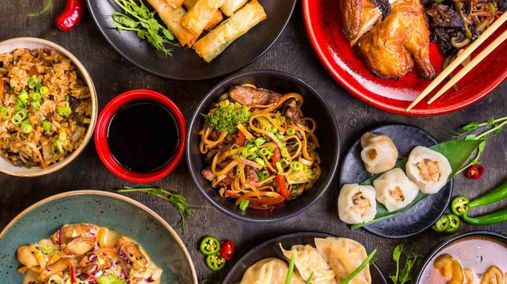
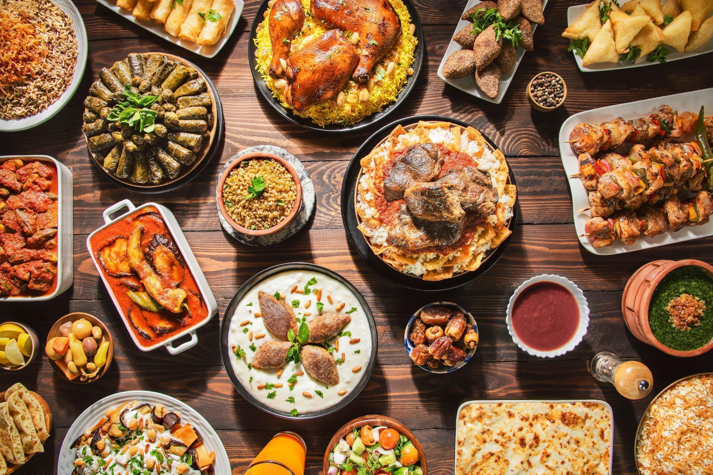

Menjar xinès
En un dels meus viatges, vaig tenir l'oportunitat de degustar l'autèntica cuina xinesa, i va ser una experiència culinària inoblidable. En un petit restaurant amagat en un carreró de Pequín, vaig provar el Pato de Pequín, amb la seva pell cruixent i carn suculenta, servit amb fines làmines de ceba tendra i salsa hoisin, tot embolicat en petites oblees fines com el paper. També vaig gaudir dels "dumplings", farcits de carn i verdures, perfectament condimentats i cuinats al vapor, una delícia simple però saborosa. Un altre plat que em va sorprendre va ser el "Mapo Tofu", un guisat picant de tofu amb carn de porc, cuinat amb salsa de soja, all i molta quantitat de pebre de Szechuan, que li donava un toc especial. La combinació de sabors intensos i textures variades en cada plat em va fer apreciar la riquesa i la complexitat de la cuina xinesa. Aquesta experiència no només va saciar el meu paladar, sinó que també va obrir les portes a un nou món de sabors i sensacions.
Gastronomia Egipcia
Durant un viatge a Egipte, vaig tenir el plaer de descobrir els sabors exòtics de la seva cuina. Un dels plats que més em va captivar va ser el "Koshari", una barreja única de arròs, macarrons, llenties, ceba fregida i una salsa de tomàquet picant. Era un festival de textures i gustos, sorprenentment harmoniós. També vaig provar el "Molokhia", una sopa verda espessa feta amb fulles de jute, servida amb carn de pollastre i conill, que em va sorprendre per la seva riquesa i sabor. Els "Falafels" egipcis, més coneguts com a "Ta'ameya", eren diferents dels que havia tastat abans: fets amb faves i plens d'herbes, eren increïblement lleugers i saborosos.